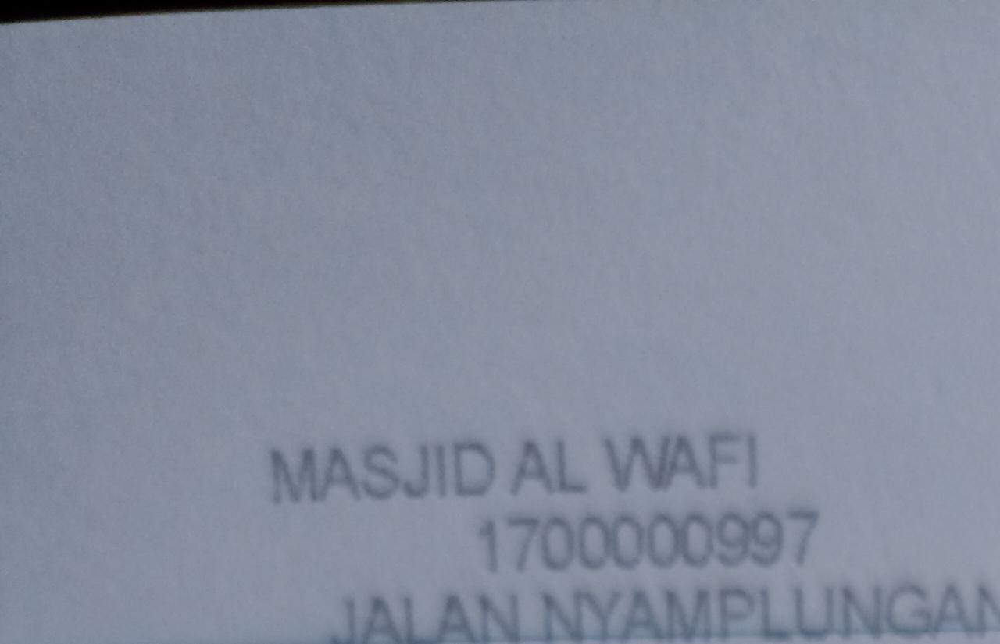

Rekening Pondok Pesantren Al-Wafi Wafi Modern
Catatan :
1. boleh tanpa konfirmasi
2. Konfirmasi ke nomor 081.77.5252.666 (WA), Nama pengirim_nama bank pengirim_masjid al-Wafi
Pondok Pesantren
Rekening Pondok Pesantren Al-Wafi Wafi Modern
Catatan :
1. boleh tanpa konfirmasi
2. Konfirmasi ke nomor 081.77.5252.666 (WA), Nama pengirim_nama bank pengirim_masjid al-Wafi
Pondok Pesantren
Perkiraan Anggaran Pondok Pesantren Al-Wafi Modern
1. Keilmuan
2. Kegiatan Keagamaan
3. Pengajian Umum
1. Pesantren Modern al-Wafi (Planning, 2020)
2. Sekolah Islam al-Wafi (Planning, 2025)
3. Irhamni international Islamic School (Planning, 2025)
1. Rifaie Amanah Peduli
1. Yayasan Jam'iyyah Istighotsah Al-Wafi
2. Yayasan Masjid Al-Wafi Surabaya
3. Yayasan Pendidikan Islam Modern Al-Wafi
1. Youtube Channel (Perkiraan Anggaran = 1 juta sampai 50 juta)
1. Website (Perkiraan Anggaran = 1 juta sampai 50 juta)
1. Belum ada sistem anggaran
Pondok Pesantren
Berikut Adalah Video dari Pondok Pesantren Al-Wafi Modern